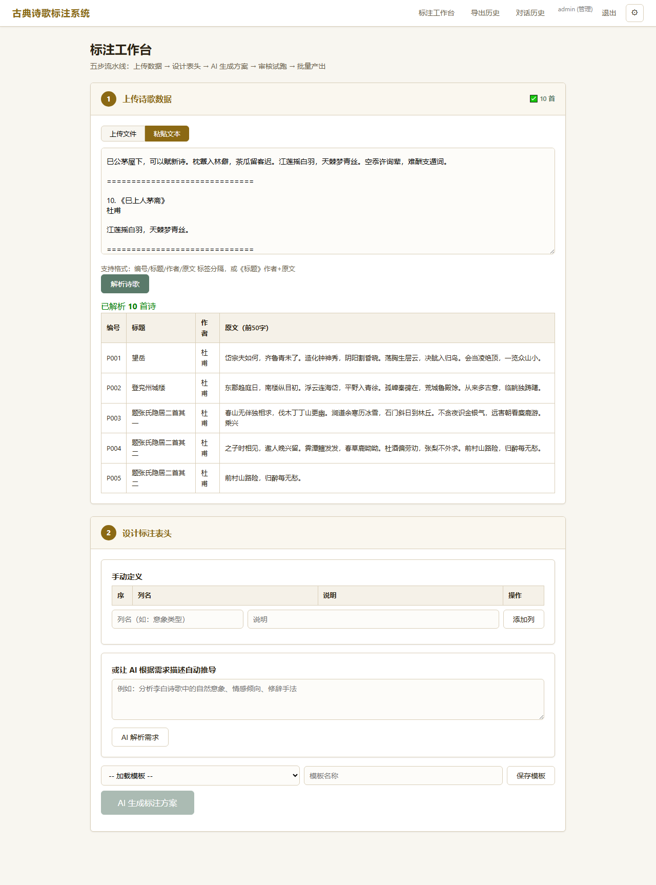
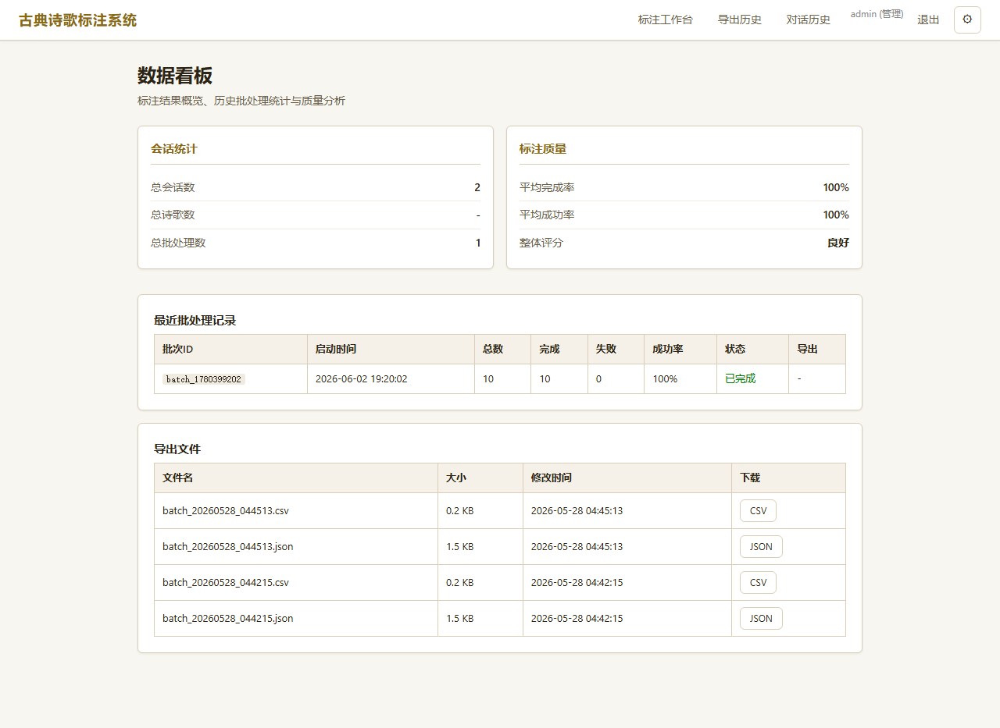
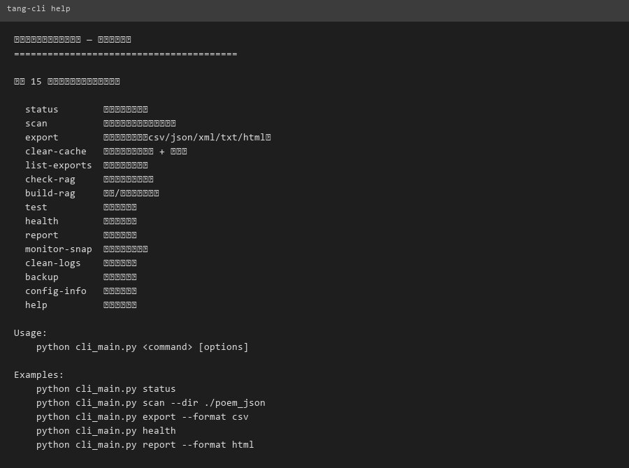
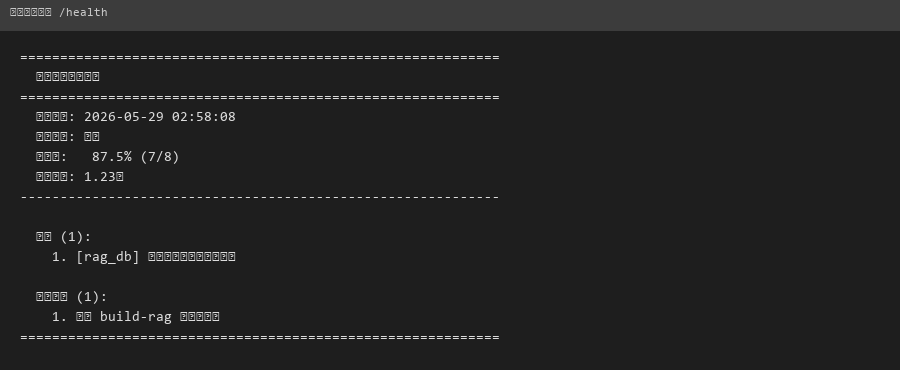

古典诗歌意象分析系统
全栈 Web 应用 + RAG 检索 + 格律分析引擎
从原始诗歌文本到交互式可视化看板的完整系统。Pipeline 链式编排：文本解析 → 格律校验（平仄/押韵/对仗）→ 意象提取 → ChromaDB 向量嵌入 → RAG 问答。Flask 后端 + ECharts 前端，支持 LLM 自然语言查询诗歌数据。格律引擎 17 个模块纯标准库实现，覆盖平水韵 106 韵部，零外部依赖。
- 处理 1,336 首杜甫诗 + 313 首全唐诗，产出 12,738 个分析单元、4,896 条意象标注
- 格律引擎 17 模块纯标准库实现平水韵 106 韵部，零 NLP 库依赖
- 全链路闭环：数据清洗 → LLM 推理 → 向量检索 → 可视化交付
- 软件著作权已申请

Poem Lab — LLM 自动化标注引擎
三段式 Meta-Prompting + 并行批处理 + 断点续传
用户用自然语言描述标注需求，系统自动设计 Schema、生成专用提示词、并行调用 LLM 批量产出结构化数据。核心创新：三段式 meta-prompting（需求解析 → Schema 设计 → 质量校验），不是手写 prompt，是让 LLM 自己设计 prompt。支持 ThreadPoolExecutor 并行、checkpoint 断点续传、SSE 流式推送进度、三维质量评分（完整性/合规性/一致性）。
- 三段式 Meta-Prompting 实现标注需求→Schema→提示词全自动生成，无需手写 prompt
- 5 并发 ThreadPoolExecutor 批处理，checkpoint 断点续传保障长任务可靠性
- 三维质量评分体系（完整性 / 合规性 / 一致性）+ SSE 实时进度反馈
- 55 个 API 路由 + 12 套标注模板，SQLite 持久化全流程数据


TangCLI — Agent 驱动运维工具
CLI + Agent Loop + Tool Registry + Web 控制台
自然语言驱动的数据运维命令行工具。核心架构：Agent Loop（用户意图 → LLM 推理 → function-calling 工具选择 → 执行 → 结果反馈）+ Tool Registry（14 个工具封装为 OpenAI function-calling schema）。15 个子命令，交互式 REPL 模式，Flask Web 控制台远程管理。PyInstaller 打包为独立 EXE，拿到一台新电脑直接跑。
- Agent Loop 架构：自然语言 → LLM → 工具调用 → 执行，完整 Agent 自主决策闭环
- 14 个工具封装为 OpenAI function-calling schema，可扩展注册表设计
- 15 子命令 + 交互式 REPL + Flask Web 控制台，三层访问模式
- PyInstaller 打包为独立 EXE，零环境依赖分发


AI 辅助开发工作流引擎
Agent 记忆系统 + 变更追踪 + Skill 编排
基于 LLM Agent 基础设施构建的元工具。Hook 自动捕获每次代码变更，跨会话持久化项目知识，维护双轨迭代日志（代码变更 + 战略思考）。9 个自定义 Skill 标准化打包为插件市场。把 AI 从一次性对话工具变成持续积累的开发伙伴——每次对话都在上一次的基础上进化，不是每次都从零开始。
- 5 个 Hook 触发器实现代码变更自动捕获、会话结束自动交接、新会话无缝恢复
- 双轨迭代模型：CHANGELOG.md 存 what + thoughts.md 存 why，持续复利积累
- 9 个自定义 Skill 标准化打包为 3 个插件组，可复用、可分发的独立模块
- 项目记忆系统覆盖 3 个子系统全量代码分析，自动 stale 检测标记过期模块